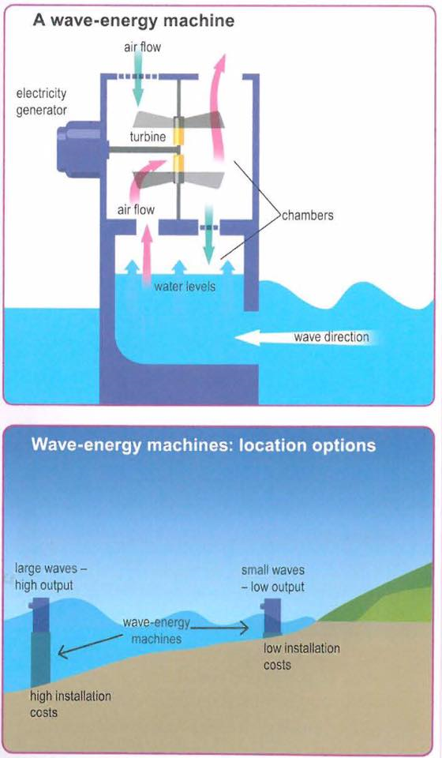

You should spend about 20 minutes on this task.
The diagrams below show the design for a wave-energy machine and its location.
Summarise the information by selecting and reporting the main features and make comparisons where relevant.
Write at least 150 words.

There are two diagrams about the design of a wind turbine and it best position to put. The materials include blades which can be fiber glass or wood, wind sensor, generator, steel tower and computer to get the information from sensor adjust blades include direction and angle.
The first picture shows the process of wind turbine produce energy. The steel tower is located around the shoreline. In the top of the tower, it is existed blades. When the wind was flowed, it will be spin. It will produce energy to the generator. As the result, the electricity is gained 1.5 megawatts. Wind sensor then detects the speed and direction of wind and its information will send to the computer.
The wind turbine can be optimum in working when it is placed in the right position. According to the second diagram, the wind turbine will be worked optimum when it is placed in the high position around the sea. It can give twice output then the turbine which existed in the domestic turbine. The maximum wind is the most strength in the high level than in the sea or in the domestic turbine.
You should spend about 40 minutes on this task.
Write about the following topic.
Buying things on the Internet, such as books, air tickets and groceries, is becoming more and more popular.
Do the advantages of shopping in this way outweigh the disadvantages?
Give reasons for your answer and include any relevant examples from your own knowledge or experience.
Write at least 250 words.
It is becoming increasingly common for people to go online to buy what they need rather than going to a shop or travel agent to do so. Although there are some dangers and disadvantages to internet shopping, I believe that the convenience often outweighs any drawbacks.
There are two main dangers and disadvantages to buying things on the internet. The one that attracts the most publicity is the problem of internet fraud. Unless the website is secure, hackers may be able to copy your credit card details and steal your money. A further disadvantage is that you cannot examine what you are buying until after you have bought it. This means you may sometimes buy something that you do not really want.
On the other hand, shopping for certain things on the internet has several points in its favor. The main one is its convenience. People who want to compare products and prices can look at all this information on a website without having to go from shop to shop. Also, they can make their purchases at any time of day or night and from any part of the world. The other advantage is that because internet companies do not need a shop, the products which they sell are often cheaper.
All in all, I think that the advantages of using the Internet for buying things such as books, computers and air tickets are greater than the disadvantages. However, someone that wants to buy clothes should visit shops because they need to see and touch them before buying them, and I would recommend purchasing them online.